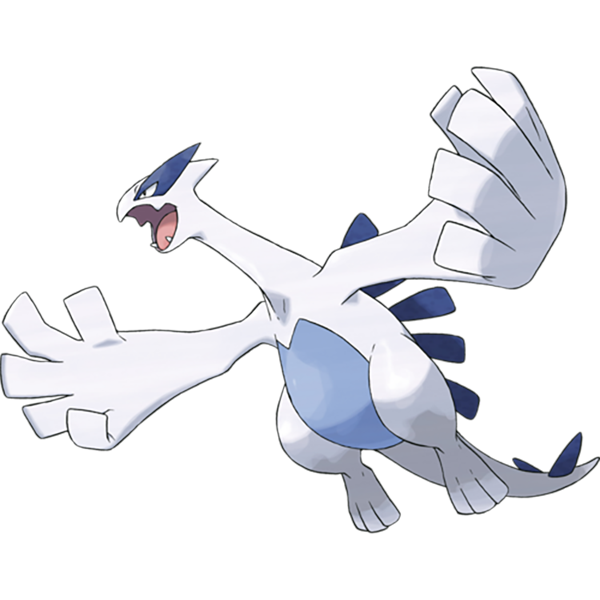

Welcome to Jamba Jungle.
Big Jambas, by my definition, are strong, large, rounded (sometimes), and have a more aggresove chararcter design, especially when compared to little cuties. These are some of my favourite Big Jambas in the Pokemon franchise.
Lugia
Add paragraph about Lugia.
Rayquaza
Write paragraph about Rayquaza
Mudsdale
write paragraph about Mudsdale
Hariyama
Write paragraph about Hariyama
Bellibolt
Write paragraph about Bellibolt